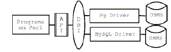
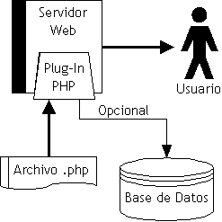
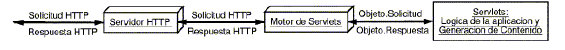

- El cliente puede ser un applet, una aplicación Java,...
- Contiene la lógica de representación (interfaz de usuario),
lógica del negocio,...
- Se conecta directamente por red con el servidor que atiende las
peticiones extrayendo la información de la BD (a nivel de SQL)
- Se genera mucho tráfico
- El cliente necesita tener instalado ciertos elementos
(drivers JDBC)
Capa de cliente -> lógica de presentación
Capa Intermedia (middle tier) -> lógica de negocio, servicios,...
Servidor (SGBD) -> lógica de datos (BD)
- Secuencia:
- El cliente manda datos a la capa intermedia
- La capa intermedia procesa la información según las reglas de negocio
- Solicita y recoge información de la BD
- Devuelve un resultado al
cliente
- La capa intermedia nos permite ignorar la BD
- La capa intermedia se encarga de todo el control de las
operaciones
- Ciertos elementos (drivers JDBC) no necesitan estar en la máquina
cliente
- El tráfico es menor
- Aumento de la modularidad. Podemos cambiar la lógica de negocio
sin verse afectada la lógica de presentación y viceversa.
- Se distinguen dos enfoques según la posición que
ocupe
el código en el modelo anterior:
-
Programación en el lado del cliente (client side)
- Programación en el lado del servidor (server side)
- El código se ejecuta en cliente
- Pueden ser scripts, applets,...
- Los "lenguajes" más representativos son:
-JavaScript (Java?)
-JScript
-VBScript
-TCL
- El más usado es el JavaScript
- Tienen capacidad para:
- Modificar el contenido del documento de manera dinámica (páginas
dinámicas)
- Estar ligados a eventos (facilitar la GUI)
- Tener acceso a la información de los formularios,procesarla,...
- Poseen numerosos inconvenientes:
- Falta de seguridad
- Vulnerabilidad (ante escuchas,...)
- Acceso pésimo a grandes almacenes de datos (BD)
- No excesivamente potentes (matizable!)
- Si tiene tantas carencias ¿por qué usarlo?
- Mejorar la lógica
de prensentación (páginas dinámicas)
· Mejor aspecto visual
· Capacidad de interacción con el usuario (facilitar la GUI)
· Adaptarse al entorno
- Captura y validación
de los datos. Una primera validación a nivel básico
evita
transmisiones ineccesarias, tiempos de retardos mayores,... aumentando
la potencia y velocidad del "sistema".
- Se ejecuta en el servidor (middle tier)
- Solución a las limitaciones de los anteriores
- Deben trabajar de forma complementaria
- Las "técnicas" más usadas son:
- CGI
- ASP
- Perl
- PHP (version 3)
- ASP
- Server Side Javascript
- Cold Fusion
- Java Servlet
- JSP
- El CGI es un estándar para tender interfaces entre aplicaciones
clientes, servidores de información (servidores HTTP) y programas.
- Pasa datos estáticos al servidor http y mediante acceso a recursos
(URI)
permite un intercambio de datos con los programas.
- El programa puede estar escrito en cualquier lenguaje que pueda ser
ejecutado sobre la máquina
por ejemplo en C
- Adquiere los datos mediante variables de entorno y por medio de la entrada estandar (puede estar formateada en algun tipo MIME)
#include <stdio.h>
#include <stdlib.h>int main(int argc, char **argv)
{
char *your_add;
your_add = getenv("REMOTE_ADDR");
printf("Content-type: text/html%c%c", 10, 10);
printf("<html>");
printf("<head>")
printf("<title>Hola Mundo</title>");
printf("</head>");
printf("<body bgcolor=\"#FFFFFF\">");
printf("<h1 align=\"center\">Hola Mundo</h1>");
printf("<p align=\"center\">Tu IP es: %s", your_add);
printf("</body>");
printf("</html>");
}
- Problemas:
- Los programas CGI deben poder ser ejecutables por todo el mundo. Esto
es un problema de seguridad por los siguientes motivos.-> De manera intencional o no, pueden mostrar información sobre el sistema- La ejecución de un CGI implica que el servidor HTTP genere otro
que puede ayudar a terceros a comprometerlo.-> Pueden realizar tareas dentro del sistema pudiendo ejecutar comandos del sistema,...
proceso en el sistema (consumo de recursos del sistema)- Un gran número de solicitudes puede ralentizar mucho el sistema e incluso bloquearlo.
Es muy costoso generar nuevas solicitudes a otros recursos como BD,...
- Capacidad de extracion de datos (gran potencia en el análisis
de
los datos obtenidos de los formularios,..)
- Mantenimiento de sistema
- Buen seguimiento de errores
- Potente y con numerosos recursos (CPAN)

- Solución muy utilizada por las empresas
- Esta tecnología es usada por Microsoft y esta ligada al servidor Internet Information Server (IIS)
- Basada en Visual Basic aunque el creador de páginas ASP puede
escoger
entre VBScript (lo más normal) o JScript ambos de Microsoft
- Favorece el desarrollo rápido
- Es bastante potente pero...
|
<%@ LANGUAGE="VBSCRIPT" %> <% ' Declaración de la Función Sumar function Sumar(valorA, valorB) Sumar = valorA + valorB end function %> <HTML>
|
<HTML>
<BODY> El resultado de: 30 + 40 es 70 </BODY> </HTML> El resultado de: 30 + 40 es 70 |
- Lenguaje de programación diseñado para realizar
aplicaciones Web
- Sintaxis similar a Perl
- Facilmente integrable con HTML
- Soportado por numerosos servidores http
- Es muy potente y ofrece buenas capacidades para el acceso a BD
- Es muy usado y es una buena solución (o la mejor) para ciertos
problemas
| <HTML>
<BODY> <?PHP echo("¡Hola Mundo!<BR>"); ?> </BODY> </HTML> |

- Es un modulo dinámico que sirve peticiones de un servidor
Web.
- Esta programado completamente en Java y corre sobre la máquina
virtual
en el lado del servidor.
- Es capaz entre otras cosas generar páginas web a partir de
la información obtenida de una BD
o de otros elementos (EJB,...)
- Son un reemplazo seguro y portable a CGI.
- Es una tecnología actual y con gran capacidad de expansión
siendo muy utilizada
en el mundo empresarial
- Es soportado por diferentes servidores (Apache,IIS,iPlanet...)
- Sus ventajas e inconvenientes radican principalmente en el hecho de estar escritos en Java.
- Las ventajas de los Servelts son numerosas:
-> Escritura de aplicaciones sencilla (rápido desarrollo,curva de aprendizaje)-> Aplicaciones muy robustas (lenguaje bien diseñado, POO)
-> Corre en el lado del servidor
-> ¡Eficiente!, se puede usar código que sólo es ejecutado la primera vez que se
corre el Servlet.Capacidades multihilo.-> A diferencia de CGI, puede mantener estados entre peticiones,manejo de sesiones
-> Totalmente portable por estar hecho en Java.Es multiplataforma real a todos los niveles
-> Muy potente a nivel de programación al ser capaz de usar todo el API JAVA
-> Extensible por ser OO (Orientado al Objeto)
-> Seguro usando el modelo de seguridad de Java (Sandbox) posibilidad de extensiones
de seguridad-> Potencia en el manejo de datos sobre BD, transacciones (rollback, cancel transaction), sincronización,...
-> API estandarizada y bien definida
- Pero los servlets tambien poseen desventajas
-> Java pertenece a Sun Microsystems
-> Java es generalmente lento de ejecutar (JVM, JIT)-> Se necesita un servidor de aplicaciones (Tomcat,WebSphere)
- La velocidad dependerá de la buena o mala configuración
que tengamos así como
de la implementación de máquina virtual que estemos ejecutando.
- El servlet no corre como un proceso separado, corre dentro del proceso
motor (hilo vs proceso).Esto elimina el sobreprocesamiento y disminuye
el consumo de recursos.
- El servlet permanece en memoria y solamente existe una instancia de
él.
Esto ahorra memoria y permite el manejo de datos persistentes.
Funcionamiento de los servlets
- Al ser tan potente se nos permiten técnicas para aumentar la
eficiencia como
son los almacenes de hilos, de conexiones a bases de datos,...
Un poco de estadistica, (mentira estadistica?)
Actualmente se esta utilizando una estructura parecida en el servidor
Zope sustituyendo Java por Python pero mantiendo el mismo ideario.
- El motor de JSP es sólo un Servlet cuya extensión
tiene
correspondencia al tipo *.jsp
-Ventaja de mezclar el código html con la "aplicación"
no tenemos que escribir en nuestra "aplicación" todo el
código html.
- Provee una manera eficiente de separar la presentación del
contenido.
- Tiene definidas de manera implícita las siguientes
variables:
request
response
in
out
de los tipos HttpServletRequest, HttpServletResponse,
BufferedReader, y PrintWriter respectivamente.
- Los Java Servlets son extensiones de Java por lo que para poderse
utilizar necesitan un máquina virtual
- Podemos usar las JVM de Sun (j2sdk1.3.1, j2sdk1.4.0,...)
- También podremos usar con unos excelentes resultados (se dice
que incluso mejores) con la
máquina virtual de IBM
- O decantarnos por soluciones más libres como Kaffe,...
JAKARTA-TOMCAT
- Jakarta forma parte de la Fundación Apache
- En el 2001 tenía en marcha 21 proyectos
- Nace del desarrollo de soporte para las tecnologías Java que
venia soltando
Sun orientadas al mundo web (Java Servlets y JSP)
- Uno de esos proyectos es Tomcat
- Tomcat es un servidor de aplicaciones Java (Java Servlet,JSP) y también
servidor
web (mejor complementarlo con Apache para que trabajen de manera
cooperativa).

- Existen otros muchos servidores de aplicaciones que podemos ver en
las páginas
oficiales de Sun como son:
Apache JServ
BEA Weblogic Server
IBM WebSphere Application Server 4.0
iPlanet Application Server 6.0
iPlanet Web Server
Oracle 9i JServer
- Si trabajamos con bases de datos necesitaremos los drivers correspondientes.
Sun mantiene una página con referencias a todos los sitios oficiales
en los cuales puedes
encontrar los drivers JDBC de un determinado Sistema Gestor de Base
de Datos.
Ricardo Santamaria (AUGCYL)
Abril 2002 GFDL 1.1
{kind=link}
{kind=link}
{kind=link}